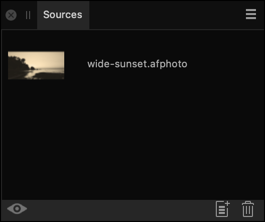

The Sources panel provides a means of storing multiple clone sources that you can use in conjunction with the Clone Brush and Healing Brush tools.
The Sources panel is available from the Photo Persona; it can be switched on via the Window menu.
The panel lets you set up multiple global sources and define the "pickup" area for each source, in advance of (or during) cloning, healing, or patching. After a Focus Merge or HDR Merge, the panel will also automatically appear.

The following settings are available in the Sources panel: